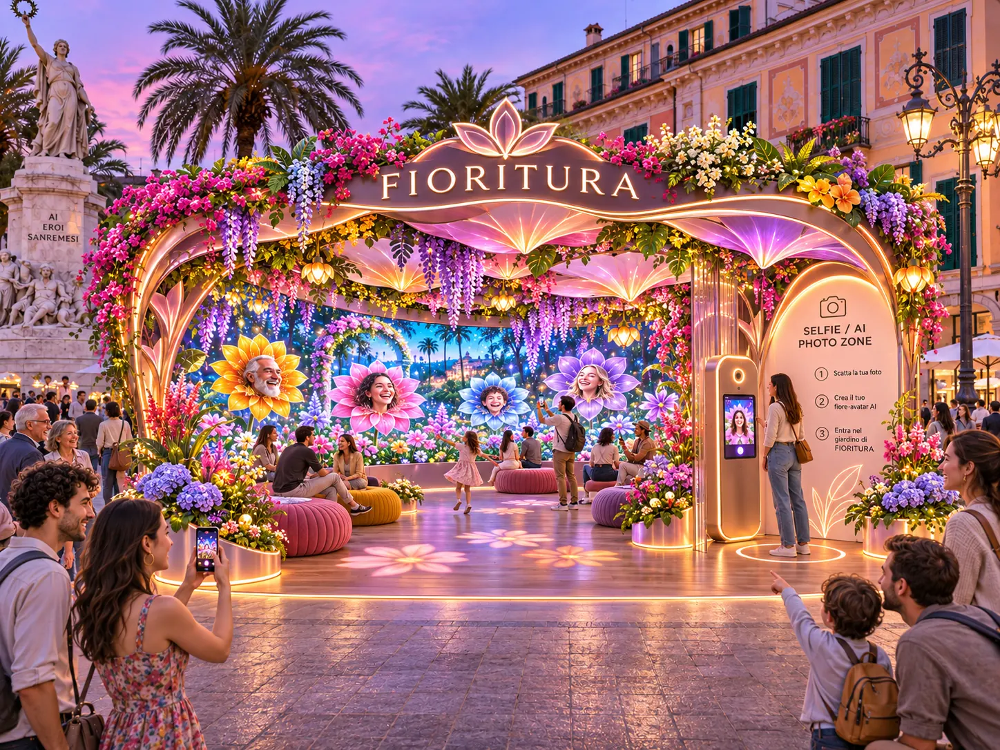

IL PRIMO GESTO
Entra. Guarda. Scegli.
Il giardino luminoso è davanti a te. La postazione fotografica è sul lato destro: partecipi liberamente e solo dopo aver letto le informazioni sull'uso della tua immagine.
FIORITURA è un'opera collettiva. Le persone passano, i fiori restano. E il giardino diventa il racconto visivo della città.
Il giardino luminoso è davanti a te. La postazione fotografica è sul lato destro: partecipi liberamente e solo dopo aver letto le informazioni sull'uso della tua immagine.
L'intelligenza artificiale interpreterà la fotografia come un ritratto floreale. Il risultato viene mostrato in anteprima: puoi approvarlo, rifarlo o interrompere l'esperienza.
Questa funzione è prevista per la postazione fisica; non raccogliamo selfie attraverso l'anteprima del sito.

Il tuo fiore si unisce al paesaggio digitale soltanto dopo conferma e controllo. Dal sito potrai visitare il giardino da qualsiasi luogo, senza dover essere fisicamente in piazza.